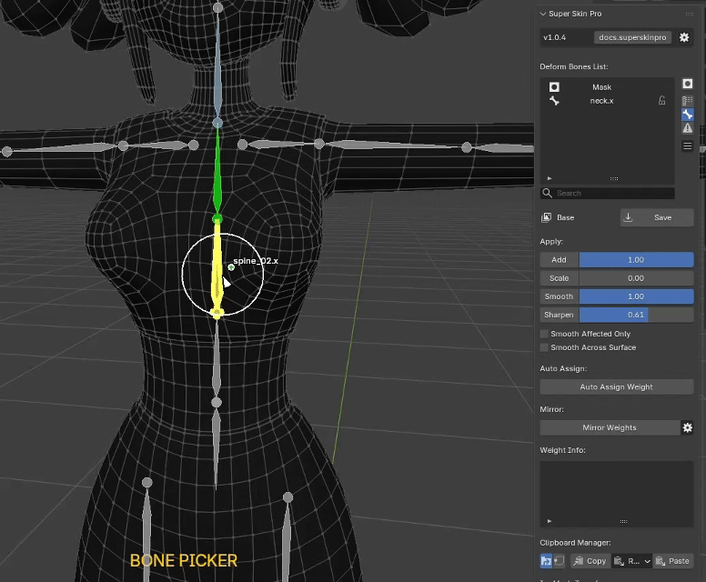

Weight Apply¶
Press Alt+3 to Preview Multi Color
Used to choose which tool to Paint Weight with — Brush Paint or Vertex Selection. The main Skin Weight operations are: - Add Weight - Scale Weight - Smooth Weight - Sharpen Weight
See more details on how to use it at Weight Apply Operation
Mirror Weight¶
Mirrors the weight of the Layer selected in the Layer List, with the following additional settings:
- Mirror Axis and Mirror Direction : sets the World Axis used as the reference.
- Mirror Target Data : sets whether to mirror only the Layer Mask or the Bone Weight (both by default).
- Mapping Keywords : a list of Wildcard Keywords that identify left and right in the bone Naming Convention.
Auto Block Weight¶

Automatically calculates weight from the selected Bones, as follows:
- Select any number of Bones
- Press the Auto Block Weight button
Note : Block Weight pulls weight from Bones that are not Locked, so check your Bone Locks carefully for a correct Block Weight result.
In-mesh Transfer¶
Transfers weight from a Vertex within the same Mesh, as follows:
- Select the Vertex to use as the Source, press Self Transfer..., then press Mark Source in the popup
- Select the target Vertex (Target), press Self Transfer... again, then press Transfer in the popup
Copy Vertex Weight¶
Clipboard a Bone Weight or Mask Weight value, as follows:
- Select a single Vertex, press Copy Vertex..., then press Copy Vertex in the popup
- Select any number of destination Vertices, press Copy Vertex... again, then press Paste Vertex in the popup